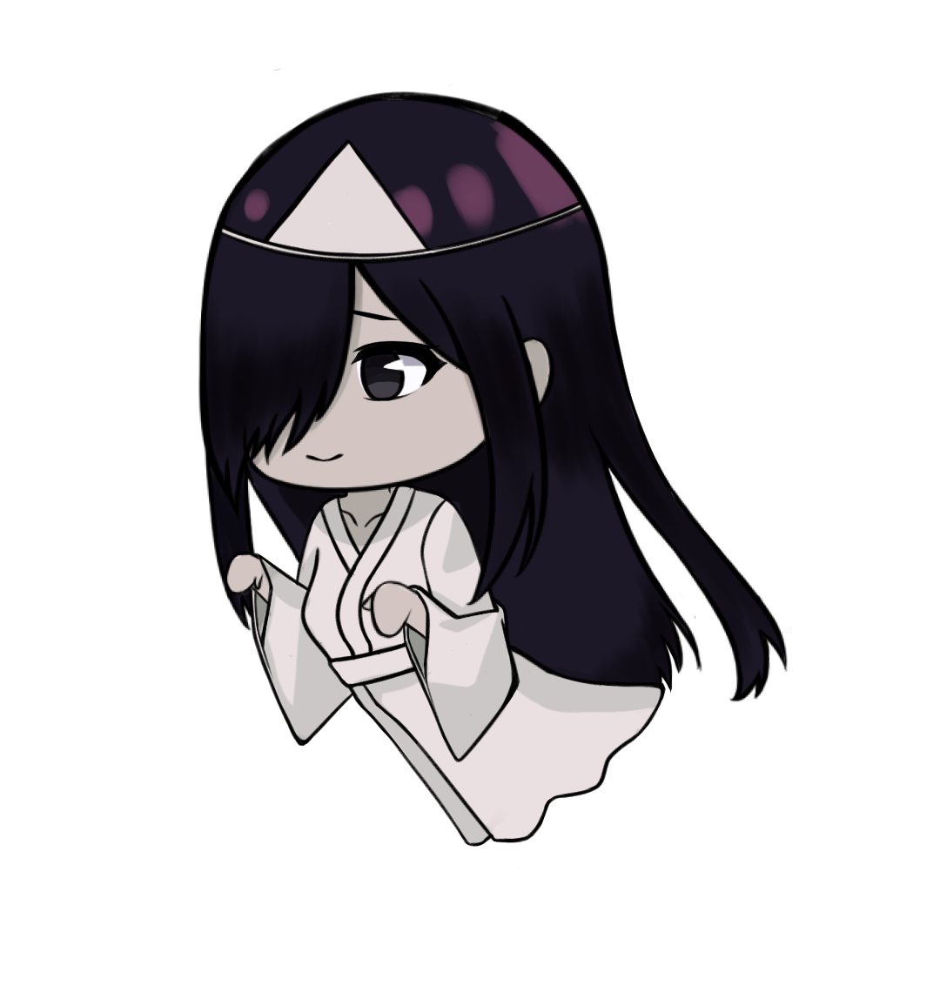
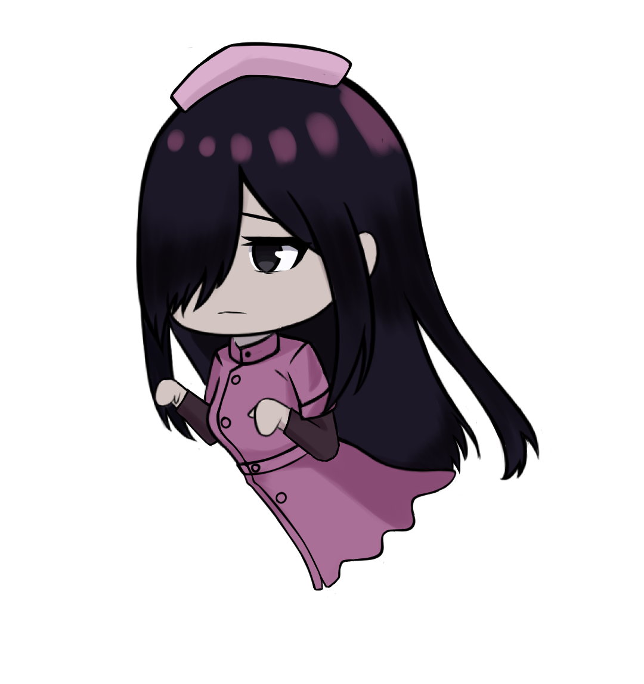
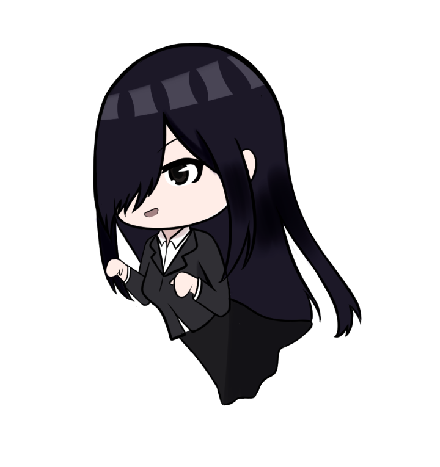
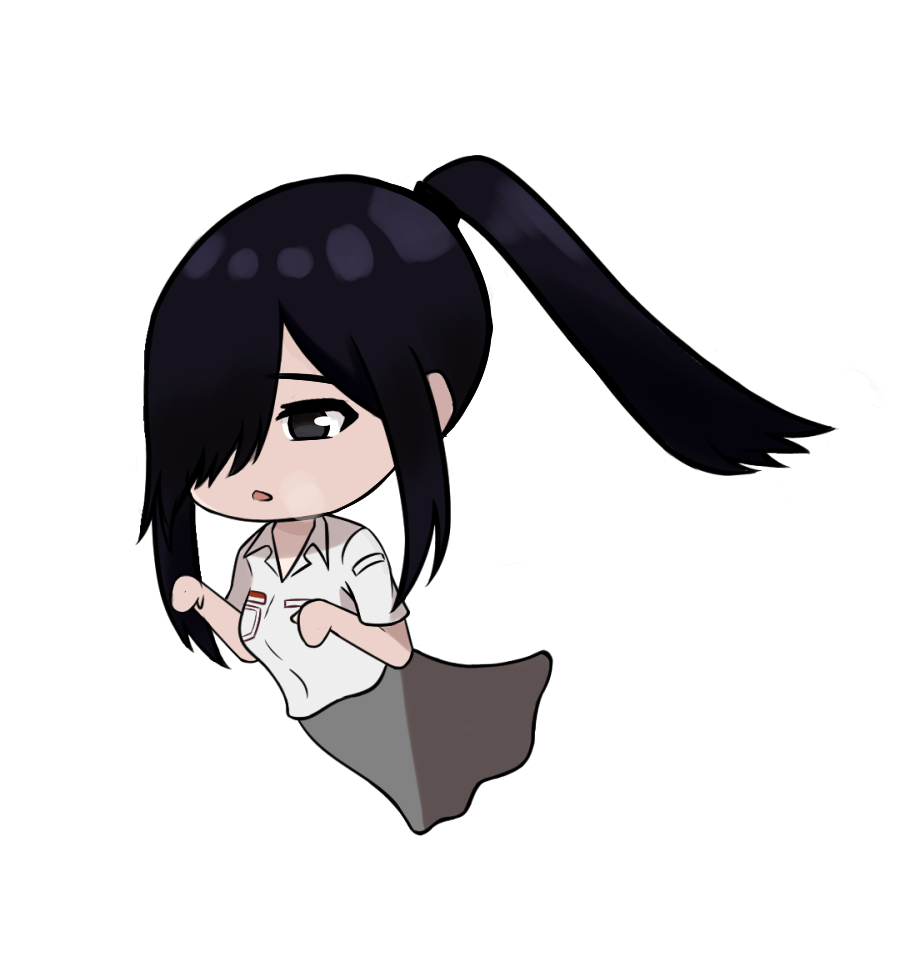

Kunti

Kunti Jepang

Kunti Perawat

Kunti Kantor

Kunti SMK
Kunti
Kuntilanak atau sering disingkat kunti adalah hantu yang dipercaya berasal dari perempuan hamil yang meninggal dunia atau wanita yang meninggal karena melahirkan dan anak tersebut belum sempat lahir.
Kunti Jepang
Kunti yang merupakan anak seorang onmyoji (praktisi sihir Jepang) yang terkenal, dan dia mewarisi kemampuan ayahnya untuk berkomunikasi dengan roh serta melawan kejahatan. Setelah kematian ayahnya yang gagal menyegel roh jahat Yurei no Oni, Kunti mengambil alih tugas tersebut dan mengorbankan dirinya untuk menjadi penjaga antara dunia manusia dan dunia roh.
Kunti Perawat
Kunti yang dikenal sebagai sosok yang penuh kasih, sabar, dan berdedikasi. Dia memiliki empati yang tinggi dan selalu siap mendengarkan keluhan serta cerita pasiennya. Kunti Perawat dikenal di rumah sakit karena ketenangannya dalam situasi darurat dan kemampuannya untuk memberikan rasa aman kepada pasien.
Kunti Kantor
Kunti ini sering terlihat mengenakan pakaian kantor era 1990-an, dengan rambut panjang yang tergerai. Wajahnya pucat dengan mata yang tajam dan penuh misteri. Kadang-kadang, penampilannya disertai dengan aura dingin yang tiba-tiba menyelimuti ruangan.
Kunti SMK
Di sebuah Sekolah Menengah Kejuruan (SMK) di kota Semarang, terdapat cerita tentang seorang siswi bernama Kunti yang meninggalkan jejak mendalam sebelum kematiannya yang tragis(Meninggal dalam insiden kebakaran sekolah). Kisahnya telah menjadi legenda di kalangan siswa dan guru, membawa aura misteri dan inspirasi di sekolah tersebut.